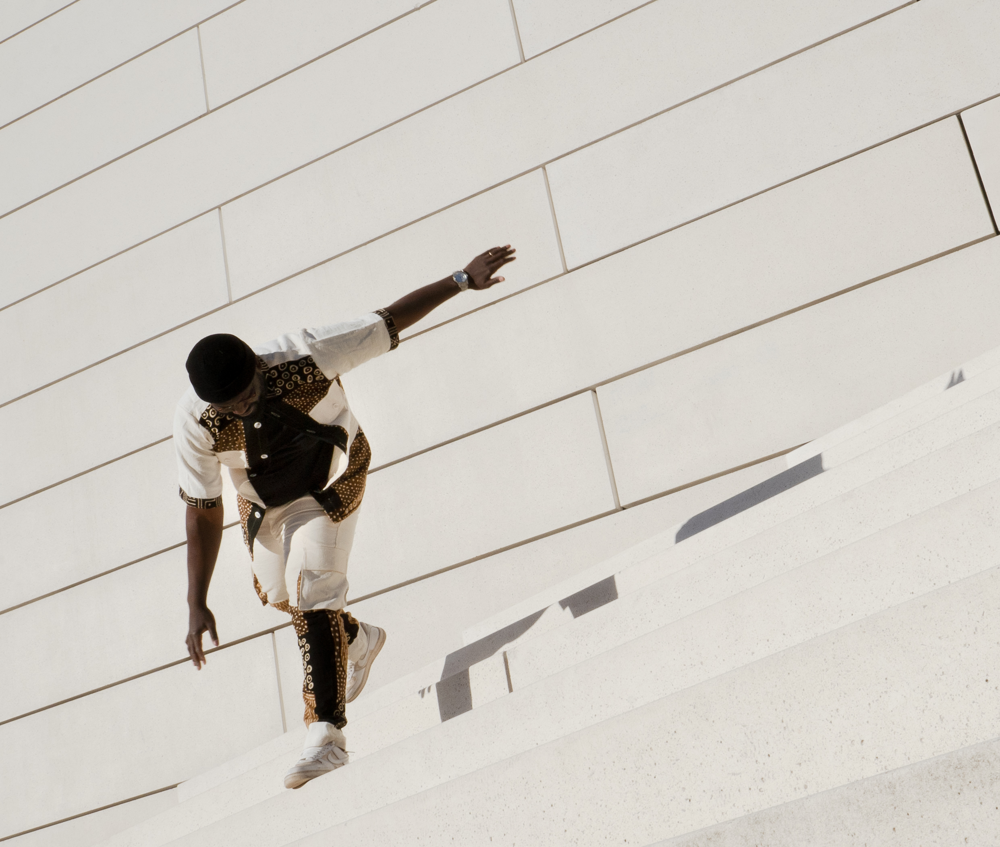

Je rends les
visions lisibles.
Et désirables.
Branding, IA, design systémique, soft power culturel. J’opère à la lisière du sensible, du symbole et du système pour des marques qui veulent marquer leur époque.
Télécharger CV
Une réponse
au Chaos.
Je suis un homme façonné par l’intensité. Quand je me concentre, c’est avec une force presque totale : je peux tout éteindre autour de moi pour résoudre un problème, concevoir un objet, bâtir un projet. J’avance comme une tornade : par vagues de créativité fulgurantes, par périodes d’élan brut, suivies de silences nécessaires.
Ce que je poursuis, ce n’est pas la nouveauté : c’est l’évidence. Une beauté qui transcende les époques, comme une carrosserie italienne des années 50, comme le vol d’un oiseau, comme la main d’un sculpteur qui épouse la matière. Je crois en l’élégance utile. En la simplicité qui soigne. La beauté, pour moi, est plus qu’un luxe ; c’est un besoin vital. Une réponse au chaos.
Ma force vient de plus loin que moi. Je porte l’héritage de mes ancêtres. Je suis le fruit d’un long récit. Un père, un mari, un passionné ; mais aussi un rêveur hanté par la vérité du monde. Mon regard est celui d’un humaniste romantique : souvent émerveillé, parfois blessé. Mais toujours guidé par le désir de créer du sens, du lien, de la beauté. Pas pour plaire ; mais parce que ça compte.
Trajectoire
Niamato Consulting
Ingénierie de projets européens : conception de stratégies narratives (storytelling, identité) et direction de contenus. Création visuelle augmentée par IA (Midjourney, DALL·E) et coordination de productions marketing.
Universal View
Pilotage de campagnes créatives (inclusion, mémoire). Production de visuels, affiches et micro-formats. Développement de concepts artistiques pour ateliers et stratégie social media.
Startup Véhicule Électrique (stealth)
Création et direction d'un collectif de design génératif IA issu d'une communauté Discord autour de DALL-E, atteignant 700 000 abonnés Instagram via l'exploration de techniques de rendu biomimétiques. Collaboration avec Frank Stephenson, Pininfarina et Italdesign sur des concepts de véhicules électriques testés (aérodynamique, systèmes de gestion de batteries). Co-fondation d'une startup de production artisanale ; levée de fonds de 19 M€ avant suspension du projet en 2024.
Ecozone — Dakar, Sénégal
Reprise d'un programme en échec communicationnel : reconstruction de la confiance des parties prenantes entre bailleurs européens, partenaires locaux et organisation fondatrice. Obtention d'un partenariat avec Extreme E, série de course électrique tout-terrain opérant sous l'égide de la FIA, pour l'étape sénégalaise du championnat. Le programme reste opérationnel aujourd'hui.
Multiples organisations — France, Royaume-Uni, Afrique de l'Ouest
Production de l'ensemble des communications pour plus de cinquante programmes européens : rapports institutionnels pour les bailleurs UE, notes de briefing pour les organisations partenaires, newsletters, notes de politique et documents de positionnement stratégique pour des organes de gouvernance soumis à des contraintes de confidentialité et de conformité.
Revolution Party
Conception et promotion de +200 événements à Birmingham. Développement de partenariats culturels, stratégies de communication 360° et coordination logistique.
Savoir-Faire
Savoir-Être
Empathie • Vision Holistique • Curiosité • Leadership • Résilience • Adaptabilité Culturelle • Intelligence Émotionnelle